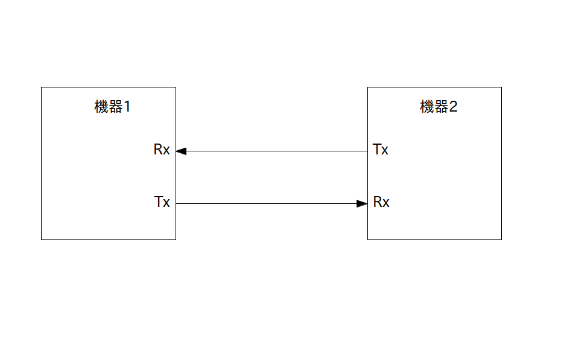

RS-232C は Recommended Standard 232C の略でシリアル通信を行うための代表的なインターフェースです。 RS-232Cではなく「UART」、「シリアルインターフェース」または単に「シリアル」と呼ばれる事も多いです。
RS-232C は一般的に 25 ピンか 9 ピンから出来ているシリアルポート形式で提供されていますが、最低 Rxピン、Txピン の 2 ピンさえあれば 2 つの機器間でデータをやり取り出来ます(実際には GND も繋ぎます)。
1969年に出来た相当古い規格なので 1 対 1 でしか通信出来なかったり、通信速度も遅かったりなどの問題も多いです。一方、上で書いたように最低 2 ピンあればデータを送受信出来たり、ノイズに強くて遠距離でもデータを送れたり、枯れていて非常に安定していたりすることから、21世紀の今でもまだまだ最前線で使われている現役規格です。
シリアルポートがPCに付いていることは少なくなって来ましたが、大抵のマイコンボードやPICなどには Rx 、Txピンが付いていて、ライブラリを通じてソフトウェア上からシリアル通信をすることが出来ます。
さて RS-232C の各ピンの正式名称と用途、及び接続例は以下の通りです。
Rx : レシーブド・イクスチェンジ ・・・データを受信する
Tx : トランスミット・イクスチェンジ ・・・データを送信する
矢印の向きにデータが送られる
なお GPIO の時と同様に電圧レベルには注意する必要があります。
特に PC 等の比較的大きい機器で使われている RS-232C の電圧レベルは -15V 〜 +15V なのですが、マイコンや IC 等の Rx、Tx ピンの電圧レベルは一般に 0V 〜 5V 又は 0V 〜 3.3V になります。
従ってRS-232Cの電圧レベルが異なる場合は、機器や回路の間に電圧レベルの変換ICを入れないと通信出来ないばかりか、最悪機器や回路が壊れるので注意して下さい。